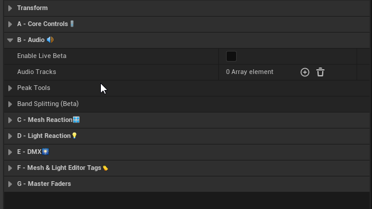

Adding Audio Tracks:

Click the "+" button to add a new audio track, or drag them in from your content browser.
Set the 'Track Name' (used for Peak Visualization and Debugging)
Set the 'Track Name' (used for Peak Visualization and Debugging)